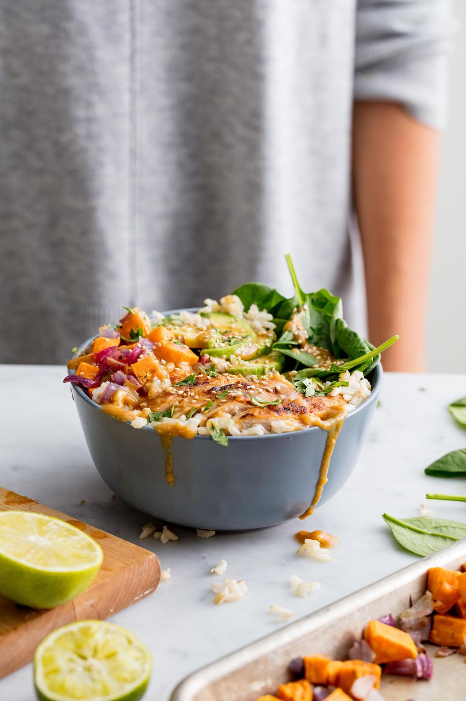

Buddah Bowls

Description
This easy Buddah Bowl recipe is healthy, flavorful and easy to adapt!
It is made with whole grains, roasted vegetables, sweet potato, and topped
with a delicious peanut sauce.
Ingredients
- 1 large sweet potato, peeled and cut into 1/2-inch cubes
- 1 large red onion, diced
- 3 tbsp. extra virgin olive oil, divided
- Kosher salt
- Freshly ground black pepper
- 1lb. boneless, skinless chicken breast
- 1/2 tsp. garlic powder
- 1/2 tsp. ground ginger
- 1 small clove of garlic, minced
- 2 tbsp. creamy peanut butter
- 1/4 c. lime juice
- 1 tbs. low-sodium soy sauce
- 1 tbsp. honey
- 1 tbsp. toasted sesame oil
- 4 c. cooked brown rice
- 1 avocado, thinly sliced
- 2 c. baby spinach
- 1 tbsp. freshly chopped cilantro, fpr garnish
- 1 tsp. toasted sesame seeds
Steps
- Preheat oven to 420 °. On a large baking sheet, toss sweet potatoes
and onion with 1 tbsp. of oil and season with salt and pepper. bake until
tender, 20 to 25 minutes.
-
Meanwhile, in a large skillet over medium-high heat, heat 1 tbsp. of oil.
Season chicken with garlic powder, ginger, salt, and pepper. Cook until
golden and no linger pink, 8 min per side. Let rest 10 minutes , then slice.
-
In a small bowl, whisk together garlic, peanut butter, l;ime juice, soy sauce,
and honey. Whisk in sesame oil until smooth.
-
Divide rice among four bowls and top each with sweet potato mixture, chicken,
avocado, and baby spinach. Sprinkle with cilantro, sesame seeds and drizzle
with dressing before serving.